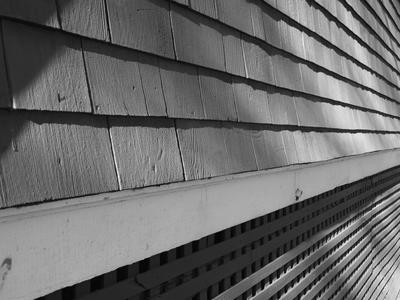

Adopting Qtile
Qtile is a tiling window manager written in Python for the X Window System (that means Linux and other *nixes). It's been around for a while, and I've tried on several occasions to use it. Recently, I (and Qtile) made enough progress that it's reliable and efficient to use as my daily driver. 
{kind=link}
You can watch a short and droll video about Qtile from 2011 on YouTube
Despite its name, Qtile has nothing to do with Qt nor KDE, in fact like most tiling window managers, it replaces a desktop environment. I was an XFCE user for many years, and more recently made extended trials of KDE and Gnome. Gnome ran pretty well on my middle-aged Thinkpad, but I found myself needing to use the mouse a bit more than I wanted to, especially because I was trying to use the trackpad instead of toting around a mouse.
Qtile has enabled me to do virtually all my window management using the keyboard with a minimum of effort. Because I can (when I want) dispense with any chrome or even a bar, Qtile lets me make most efficient use of my limited number of pixels (1368x768). I tend to be a windows-maximized-all-the-time kind of person, and of course that is easy to work in with Qtile. When I need to switch to side-by-side or tiled windows, it's just a keyboard shortcut away.
As I mentioned above, I had tried to migrate to Qtile before, twice actually. Both times I got frustrated by Qtile falling down when I tried something new, most likely because of problems with my setup.py. I also struggled with working without some of the automation that comes along with using a more traditional desktop environment, like automounting of USB devices, a menu system that didn't require me to know exactly what program I wanted to start, and volume controls. Both times, I retreated back to the comfort of a desktop environment with its handy bar, buttons, and menu.
This time, several things came together to make it all work. I am now using a Thinkpad as my primary computer, and Thinkpads are particularly well supported with features like special key mapping and power management, so I didn't need to configure these manually in Qtile. The Qtile documentation has improved, and there are more examples of config files available on Github. In addition, I "warmed up" by using i3 for a couple of weeks. i3 is extremely well documented, there is much more of an ecosystem built up around it, and I was also able to get used to the tiling workflow using i3wm. I also came up with some of the solutions I needed for mount management , a menu system that uses the desktop application categories, and notification.
Once I got into a Qtile groove again, I found and adapted a couple of wrappers for dmenu: dmenu-qtile-windowlist.py and dynmenu. The first one makes it easy to select a window to focus from a list, and the second makes it easy to start programs as root.
Created table of commands by layout
Created key mapping cheatsheet which corresponds to my config.py configuration (which is somewhat different than the default)